Rohit Gurunath Sharma (born 30 April 1987) is an Indian international cricketer who currently captains the India national
cricket team across all formats. He is a right-handed batsman. Considered one of the best batsmen of his generation and one
of the greatest opening batters of all time,[4] Sharma is known for his timing, elegance, six-hitting abilities and
leadership skills. Sharma holds several batting records which famously include most sixes in international cricket,[a]
most double centuries in ODI cricket (3), most centuries at Cricket World Cups (7) and joint most hundreds in Twenty20
Internationals (5). Rohit Sharma is the first player to score 5 T20I centuries.[6] He plays for Mumbai Indians in IPL and
for Mumbai in domestic cricket Sharma formerly captained Mumbai Indians and the team has won 5 titles in 2013, 2015, 2017,
2019 and 2020 under his leadership, making him the most successful captain in IPL history, sharing this record with MS Dhoni
(5 title wins in IPL). With India, Sharma was a member of the team that won the 2007 T20 World Cup, and the 2013 ICC
Champions Trophy, where he played in the finals of both tournaments. Rohit is one of four players to have played in
every edition of the ICC T20 World Cup, from the inaugural edition in 2007 to the latest one in 2022.Sharma currently
holds the world record for the highest individual score (264) in a One Day International (ODI) match and is the only
player to have scored three double-centuries in ODIs and also holds the record for scoring most hundreds (five) in a
single Cricket World Cup, for which he won the ICC Men's ODI Cricketer of the Year award in 2019. Sharma has received
two national honours, the Arjuna Award in 2015 and the prestigious Major Dhyan Chand Khel Ratna Award in 2020 by the
Government of India. Under his captaincy, India won the 2018 Asia Cup and the 2023 Asia Cup, the seventh and eighth
time the country won the title, both in ODI format as well as the 2018 Nidahas Trophy, their second overall and first
in T20I format.Outside cricket,
Sharma is an active supporter of animal welfare campaigns. He is the official
Rhino Ambassador for WWF-India and is a member of People for the Ethical Treatment of Animals (PETA). He has worked
with PETA in its campaign to raise awareness of the plight of homeless cats and dogs in India.Sharma was born on 30
April 1987 in Bansod, Nagpur, Maharashtra, India.[7] His mother, Purnima Sharma, is from Visakhapatnam, Andhra Pradesh.
His father, Gurunath Sharma, worked as a caretaker of a transport firm storehouse. Sharma was raised by his
grandparents and uncles in Borivali because of his father's low income. He would visit his parents, who lived in a
single-room house in Dombivli, only during weekends.[9] He has a younger brother, Vishal Sharma.[10] His mother tongue
is Telugu.Sharma joined a cricket camp in 1999 with his uncle's money. Dinesh Lad, his coach at the camp, asked him
to change his school to Swami Vivekanand International School, where Lad was the coach and the cricket facilities
were better than those at Sharma's old school. Sharma recollects, "I told him I couldn't afford it, but he got me
a scholarship. So for four years I didn't pay a penny, and did well in my cricket".[10] Sharma started as an off
spinner who could bat a bit before Lad noticed his batting ability and promoted him from number eight to open the
innings. He excelled in the Harris and Giles Shield school cricket tournaments, scoring a century on debut as an opener.

Virat Kohli (Hindi pronunciation: [ʋɪˈɾɑːʈ ˈkoːɦli] ⓘ; born 5 November 1988) is an Indian international cricketer and the former captain of the Indian national cricket team. He is a right-handed batsman and an occasional medium-fast bowler He currently represents Royal Challengers Bengaluru in the IPL and Delhi in domestic cricket. Kohli is widely regarded as one of the greatest batsmen of all time.[4] He holds the record as the highest run-scorer in IPL, ranks second in T20I, third in ODI, and stands as the fourth-highest in international cricket.[5] He also holds the record for scoring the most centuries in ODI cricket and stands second in the list of most international centuries scored. Kohli was a key member of the Indian team that won the 2011 Cricket World Cup, 2013 ICC Champions Trophy, and captained India to win the ICC Test mace three consecutive times in 2017, 2018, and 2019.[6] In 2013, Kohli was ranked number one in the ICC rankings for ODI batsmen. In 2015, he achieved the summit of T20I rankings.[7] In 2018, he was ranked top Test batsman, making him the only Indian cricketer to hold the number one spot in all three formats of the game. He is the first player to score 20,000 runs in a decade. In 2020, the International Cricket Council named him the male cricketer of the decade.[8] He has received many accolades for his performances in cricket. He won the ICC ODI Player of the Year award four times in 2012, 2017, 2018, and 2023. He also won the Sir Garfield Sobers Trophy, given to the ICC Cricketer of the Year, on two occasions, in 2017 and 2018 respectively. In 2018, he became the first player to win both ICC ODI and Test Player of the Year awards in the same year. Also, he was named the Wisden Leading Cricketer in the World for three consecutive years, from 2016 to 2018. At the national level, Kohli was honoured with the Arjuna Award in 2013, the Padma Shri in 2017, and India's highest sporting honour, the Khel Ratna award, in 2018. In 2018, Time magazine included him on its list of the 100 most influential people in the world. Kohli has been called one of the most commercially viable athletes, and is often ranked among the highest-paid globally. Early life Virat Kohli was born on 5 November 1988 in Delhi into a Punjabi Hindu family. His father, Prem Nath Kohli, worked as a criminal lawyer, and his mother, Saroj Kohli, served as a housewife. He has an older brother, Vikas, and an older sister, Bhawna.[9] Kohli's formative years were spent in Uttam Nagar. He commenced his early education at Vishal Bharti Public School.[10] According to his family, Kohli exhibited an early affinity for cricket as a three-year-old. He would pick up a cricket bat and request his father to bowl to him.[11] In 1998, the West Delhi Cricket Academy (WDCA) was created. On 30 May of that year, Prem Nath Kohli, who'd espoused his younger son's fervour for cricket, assisted nine-year-old Kohli's aspirations and arranged for him to meet Rajkumar Sharma.[12] Upon the suggestion of their neighbours, Kohli's father considered enrolling his son in a professional cricket academy, as they believed that his cricketing abilities merited more than just playing in gully cricket.[13] Despite his abilities, he faced the setback of being unable to secure a place in the under-14 Delhi team, supposedly due to extraneous factors. Prem Kohli reportedly received offers to relocate his son to influential clubs, which would have ensured his selection, but he declined the proposals. Kohli eventually found his way into the under-15 Delhi team.[14] He received training at the academy while simultaneously participating in matches at the Sumeet Dogra Academy located at Vasundhara Enclave.[15] In pursuit of furthering his cricketing career, he transitioned to Saviour Convent School during his ninth-grade education.[13]
 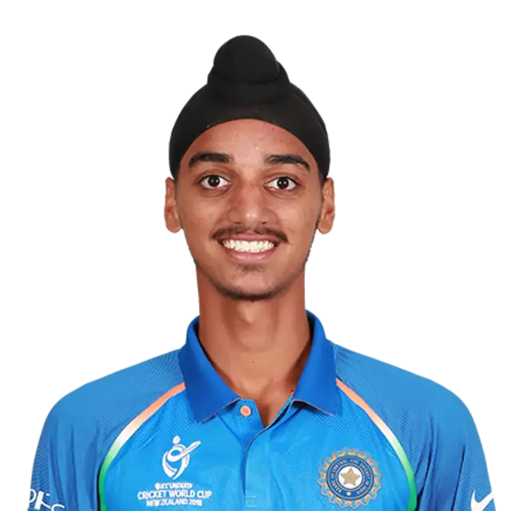
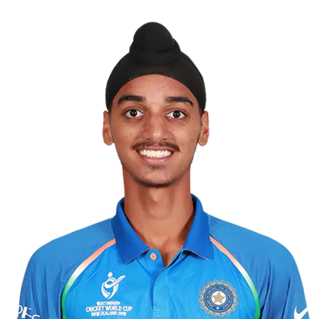
 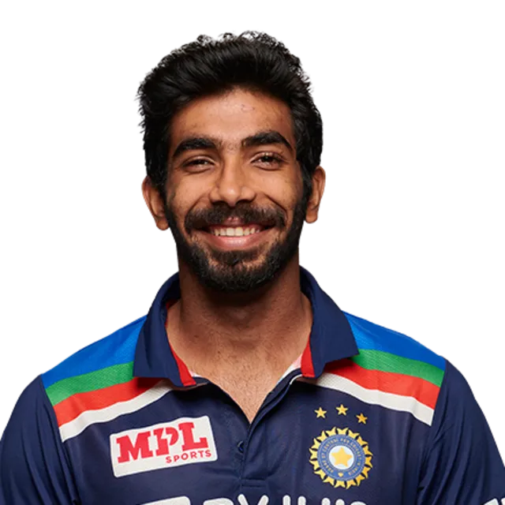
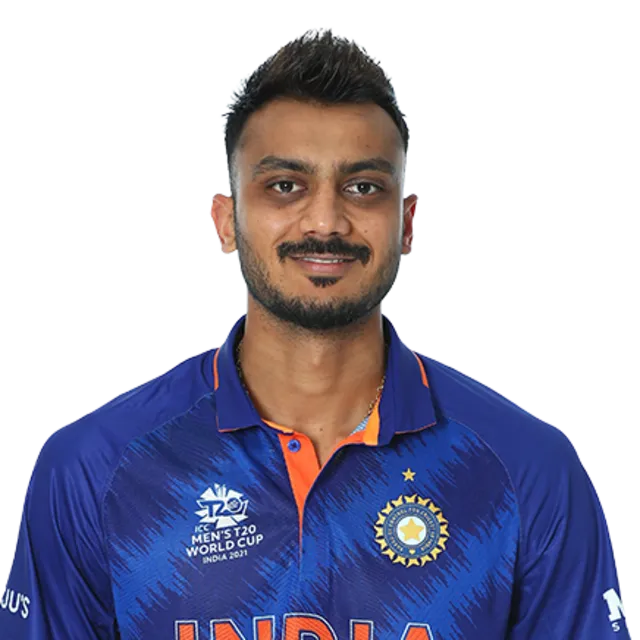
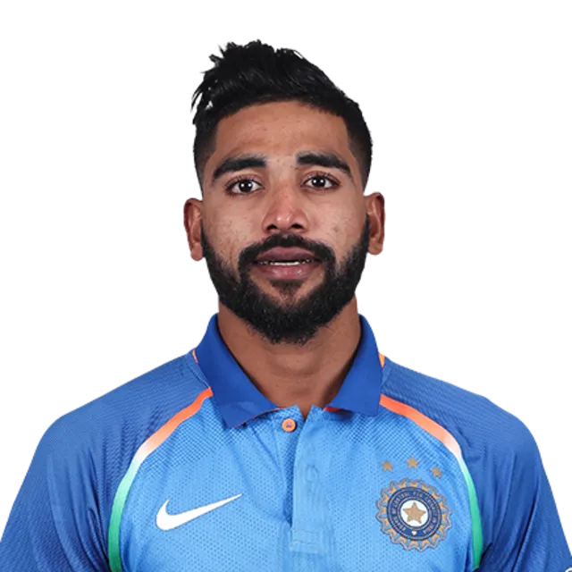
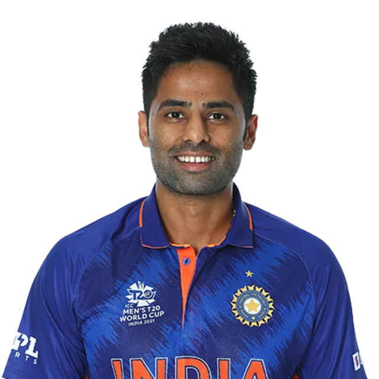
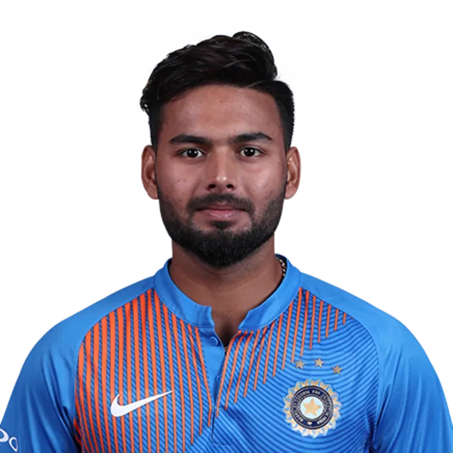
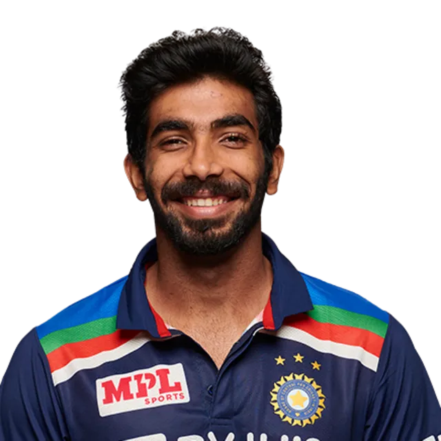
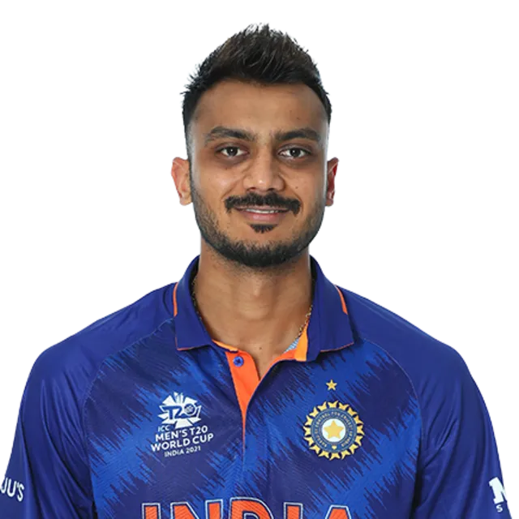
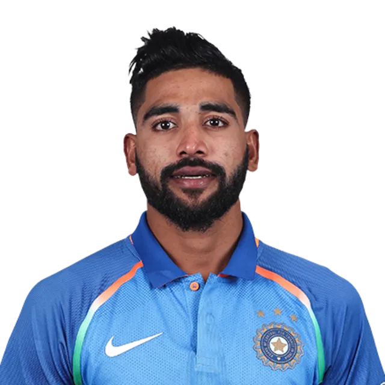
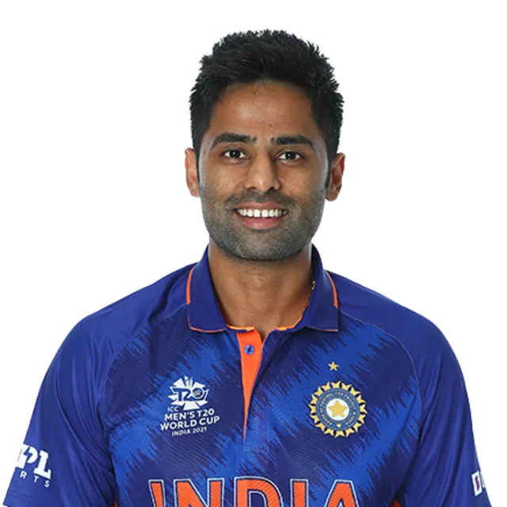
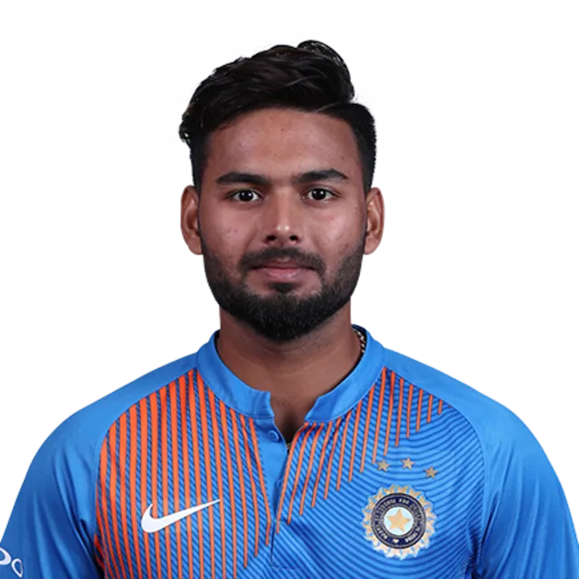